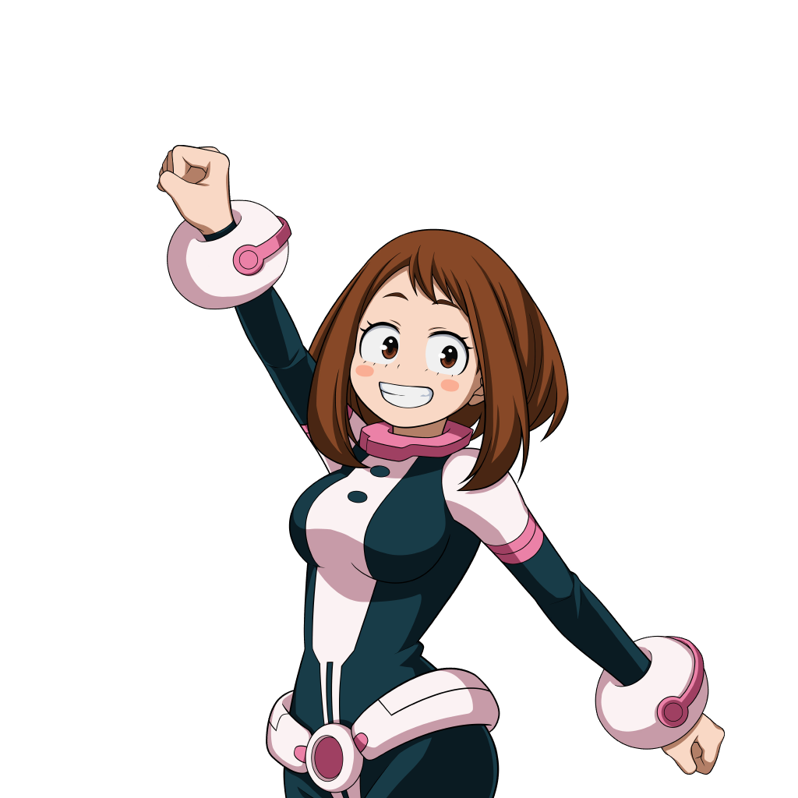
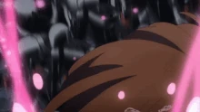

Su informacion principal
Nombre: Ochako Uraraka
Quirk: Gravedad Cero
Quirk que le permite eliminar la gravedad de un objeto ya sea de un ser vivo o de un objeto inanimado, con ciertos limites.
Wiki con informacion mas detallada de UrarakatQuirk que le permite eliminar la gravedad de un objeto ya sea de un ser vivo o de un objeto inanimado, con ciertos limites.
Wiki con informacion mas detallada de UrarakatAtaque de largo alcance usando un proyectil de alambre de su guante.
Dispara en el aire hacia objetos solidos o enemigos y te moveras hacia la direccion a la que acertaste el disparo.
Ataque de porcentaje que hace que uraraka agarre un escombro y gira con el mismo haciendo daño a todo lo que este dentro del radio del escombro.
Al final de la habilidad, o si se suelta el boton antes de que se acabe el porcentaje, se lanzara el escombro hacia adelante.
Habilidad que genera un area donde el que se encuentre dentro del ataque al inicio, sera stuneado e ira levitando por unos segundos hacia arriba,
junto a algunos escombros y cosas como rocas.
Si se pulsa de nuevo el boton de la habilidad rapidamente o despues, los escombros caeran y haran daño a los que esten debajo de estos.
Habilidad que hace que reduzcas la Gravedad de ti o de un aliado por un tiempo.

| Habilidad | Daño | Cargas |
|---|---|---|
| Alpha | 85 | 3 |
| Beta | 47 | 100% |
| Gamma | 90 | 2x1 |
| Especial | 0 | 1 |